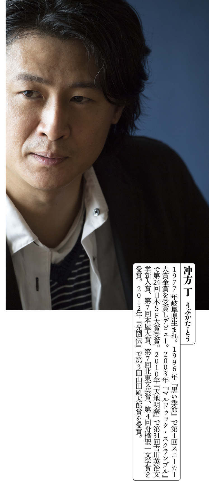
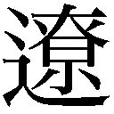
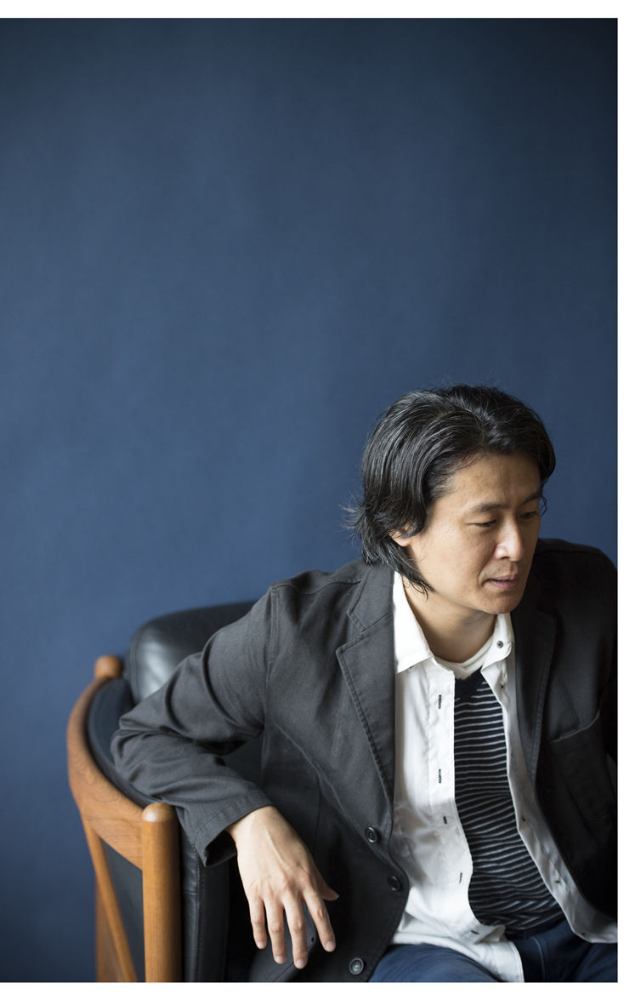
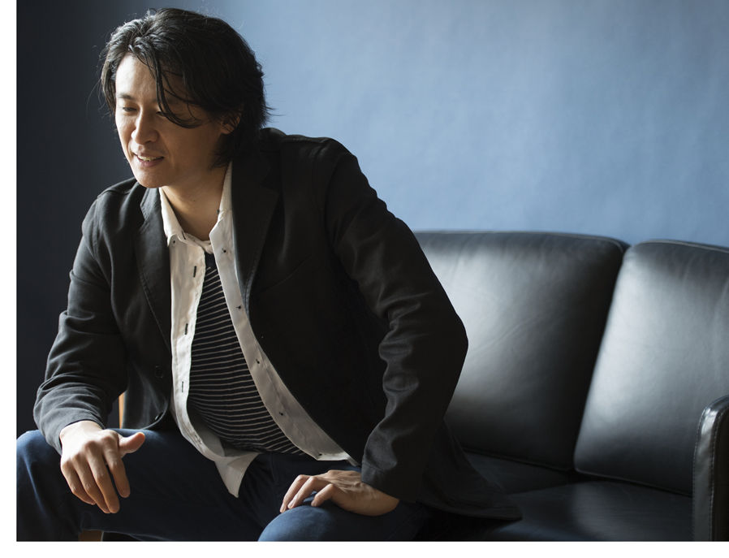
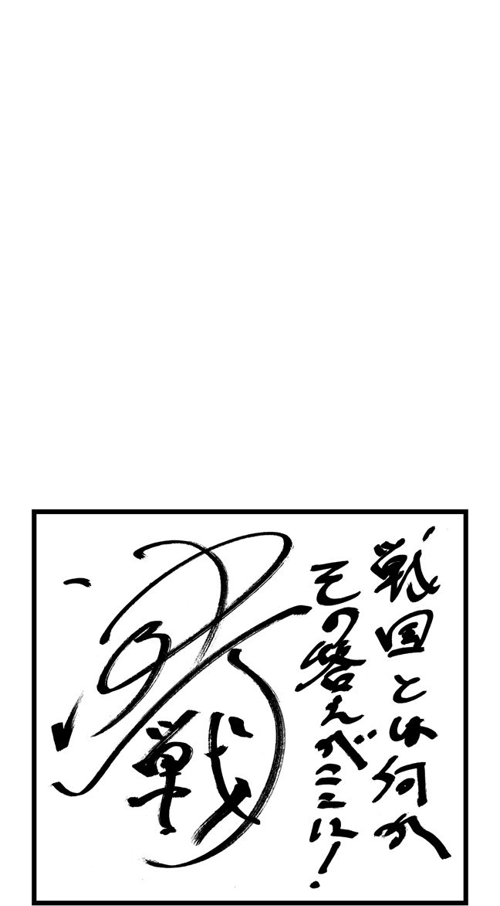
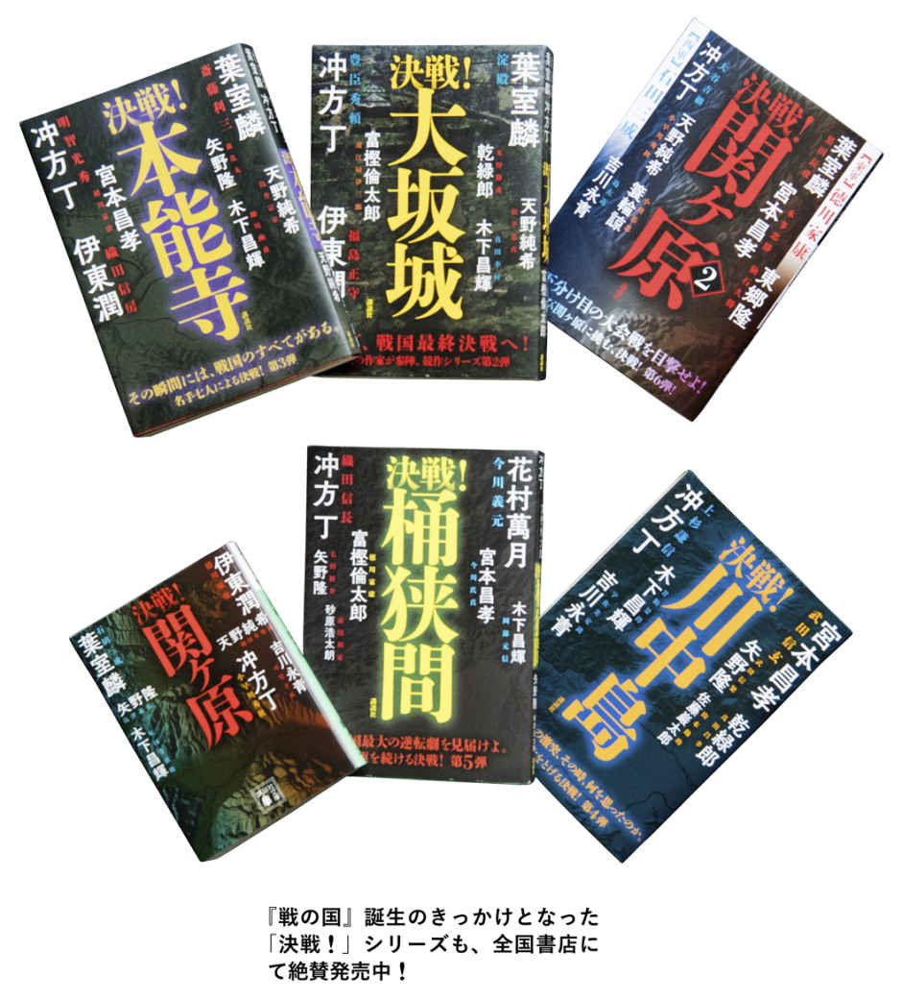
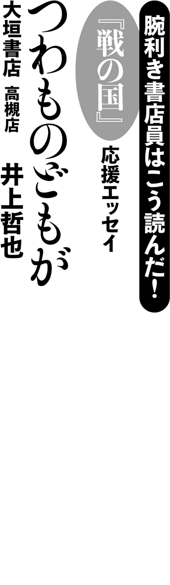
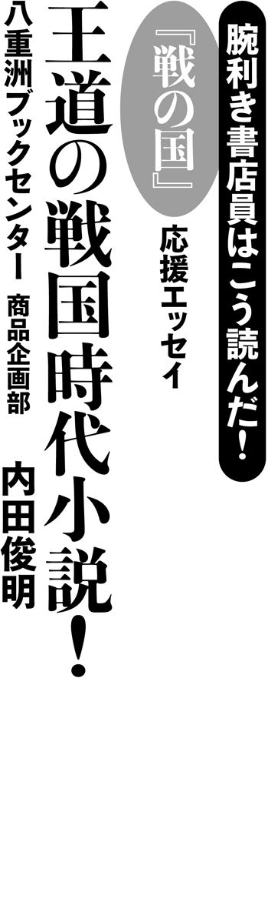
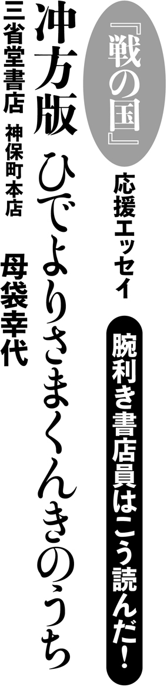
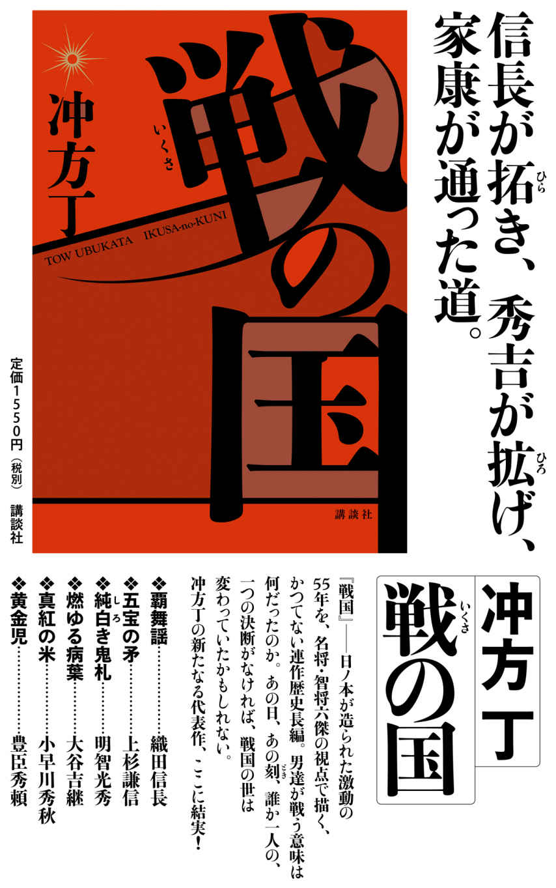

| 冲方丁『戦の国』特集 | |
| Unknown | |
| 講談社 (2017) | |

──『天地明察』では江戸初期に活躍した天文学者・渋 川 春 海 、『光圀伝』では「水 戸 黄 門 」で知られる水戸光圀、そして『はなとゆめ』では清 少 納 言 を題材に、冲方さんは時代小説を発表してきました。その流れに連なる最新刊『戦の国』は、実在の戦国武将らが大挙登場する連作長編です。今回初めて、「戦国」に材を採った理由を教えていただけますか。
冲方 きっかけは、『決戦！ 関ヶ原』というアンソロジー企画への参加のオファーでした。複数の作家がそれぞれ別の武将の視点から「関ヶ原の戦い」を書く、それを雑誌に載せるのではなく一冊の本にして出そうという試みが、新鮮だなと感じましたし、ぜひ参加したいと思ったんです。他の作家さんが書いたものと矛盾してしまうかもしれないし、諸説紛々の人物もいるわけで、どの説を採ってくるのかは分からないわけじゃないですか。そういう緊張感がある中で書くことは、非常に面白かったんですね。本来ならそこで終わるはずが、反響を受けて第二弾の『決戦！ 大坂城』が出ることになり、アメリカの商法で言うところの「フット・イン・ザ・ドア」。一度要求に応えたら、別のテーマでさらに一本、次ももう一本と、「決戦！」シリーズのレギュラー化を強要されました（笑）。
──戦国時代については、詳しかった？
冲方 決してそうは言えないと思います。ただ、僕はもともと江戸初期の時代にすごく興味がありました。戦争否定の社会を作る時の軋 轢 だとか、平和政策のさまざまな問題点は、非常に現代的なテーマに通ずるものがある。江戸初期がそもそも何を克服しようとしたのかっていう視点から、直前の戦国時代にもアプローチできるところがあるのではと思いました。幸運だったのは、執筆順が一番最初に「関ヶ原の戦い」を書いて、次は「大坂の陣」だったということですね。その二つの決戦って、戦国時代の総決算に当たるものなんですよ。そこで何が総決算されたのか、そもそも戦国時代って何なのか？ そういった疑問を、最初の段階から強く意識することができました。
──そうして執筆された六篇が今回、単著として一冊にまとまったわけですね。単行本では、織 田 信長が台頭する契機となった「桶 狭 間 の戦い」を描く一篇でスタートし、時系列が未来へと進んでいって「関ヶ原の戦い」「大坂の陣」に辿 り着くかたちです。
冲方 実際の執筆順は、「終わり」から「始まり」に向かってどんどん時系列を遡 っていったかたちでした。桶狭間で今 川 が敗れたことによって上 杉 が動いて、上杉の当主が病で亡くなってしまった後、織田信長が走っていって「本 能 寺 の変」が起こって、「関ヶ原の戦い」の後で、大坂城で豊 臣 家が滅亡し......という流れを、逆向きに書いていった。それを一冊の本にまとめるためには、時間軸順に一篇一篇をただ並べるだけではダメで、点と点を線にしなければいけないと思いました。戦国を読み解くキーワードを自分なりに持ち、それを一本の軸として各短編を貫いていかなければいけないだろう、と。織田信長、上杉謙信、明 智 光秀、大 谷 吉継、小 早 川 秀秋、豊臣秀頼。自分が書いてきた六人全員に共通しているものは何なのか？ 答えを出すまでには結局、長い時間がかかりました。答えを見つけてからは、全篇にわたって大幅な手直しをしています。
──その「答え」について伺う前に、初出原稿を執筆した当時の事実関係が確認できればと思います。というのも第一弾『決戦！ 関ヶ原』で冲方さんは、小早川秀秋の視点を採り、天下分け目の合戦を描き出しました（「真紅の米」）。石 田 三 成 が実質的に率いていた西軍に当初は参画しながらも裏切り、徳 川 家 康 が総大将を務める東軍に寝返った、この武将を選んだ理由とは？
冲方 小早川秀秋でお願いします、というご指名があったんです。他の五篇についても、編集者が人物を決めて、その人物に関する段ボールひと箱ぶんの史料がある日突然家に届く、というスタイルでした（笑）。勝手な僕の邪推なんですが、何を考えているか分からない、史料が少ないやつ担当だったのではないかな、と。秀秋、秀頼、光秀なんて特にそうで。例えば、光秀がどうして織田信長に対して謀反を起こしたのかって史料は何も残っていない。秀秋に関しても、なぜ三成率いる西軍の豊臣側から、東軍の徳川側へ寝返ったのか、はっきりした理由は分かっていないんです。
──今、例に挙げていただいた日本史上に残る二つの「謎」が、作中で解き明かされていますよね。その二篇に限らず、個人の心情にとことん寄り添っていくことで日本史上の「謎」が解かれる構成は、小説でしか果たし得ない興奮と説得力を感じました。
冲方 この人のこの感情はどこから来ているかという疑問点から、背景を読み解いていく。反対に、背景から個人の感情を抽出することもありましたね。ピンポイントに人物をあてがわれて良かったな、と思うんですよ。例えば、もしも「関ヶ原の戦い」に関わる武将を自分で選んで書けと言われたら、たぶん秀秋は選ばなかった。秀秋で書いてほしいと言われたからこそ、詳しく調べて、彼の心情をトレースする機会が得られたんです。
小早川秀秋は十六歳にして朝鮮出兵に総大将で派遣され、秀 吉 が押し進めようとしたグローバリズムの限界を見てしまいました。純粋なグローバリズムって広がることだけが目的になるので、そこに本来あった倫理観や価値観や、土着の文化を全部否定しちゃうんですね。しかも、ただ破壊の限りを尽くすだけで、文化の再構築だとか、かの地での米の生産といった方針はまったく示されなかった。そのことに対する秀吉と豊臣家への失望感が、徳川家康側に寝返るというのちの決断に結びついていったんじゃないか。そしてその決断によって引き起こされた出来事が、のちの世に繫がっていった。秀秋の心情をトレースした結果、そんなイメージが湧いてきたんです。
──先日、司 馬  太 郎 の長編小説『関ヶ原』が実写映画化されましたが、今おっしゃった一点を取っても、「司馬史観」の小早川秀秋像とは異なっていることが分かります。いわば「冲方史観」ですよね。自分は小早川秀秋をこう見たんだ、戦国の世をこう見たんだ、という。
冲方 この一冊を読むことによって、桶狭間から大坂城までの激動の五十五年間が俯 瞰 できるような作り方にはしています。いわゆる「戦国時代」は桶狭間から始まったわけではないんですけれども、それまでいろんな小競り合いがある中で、下 克 上 という点で、強大な敵を少人数で倒し得るっていう発明がここでなされました。そこからの五十五年で、じゃあこの国でいったい何が起きたのか。
戦国時代を捉えるうえでこういう書き方をしたくないなと思ったのは、血で血を洗う残酷物語といったかたちなんです。この時代は荒廃しか生まず、みんな頭がおかしくなっていたから人を殺していたんです、と言いたくなる気持ちは分かるっていうか、僕もむしろそう言いたいんですよ。当時起きていたことを現代に移し替えてみると、例えば民族紛争におけるすさまじい粛清行為みたいなものなわけじゃないですか。そういった非常に陰惨な時代だったという面もフォローしつつ、そんななかでも建設的に何かが行われていたはずで、この時代の歴史的な意義を見据えたものを書きたかったんです。

──読者が誤解しないよう補足させていただくと、『戦の国』の各短編における「血で血を洗う」合戦の生々しいリアリティは、それ自体が十二分に高品質です。冲方さんが「戦国」を題材にしたのは今回が初めてですが、ＳＦやライトノベル作品では「戦場」を数多く描いてきた、その経験が活かされているように感じました。
冲方 戦争の描写に関しては、書いていて楽しくなってしまう自分があんまり好きじゃない、という立場にさせてください（笑）。戦国武将を描く時にやらなきゃいけないことって、戦争奨励なんですよ。どうやって数千単位の他人の血をたぎらせ、狂わせられるか。戦闘意欲を高めるために一番効率的なのは、神頼み、神がかりです。この時代、無神論者の武将なんか一人もいないですからね。織田信長ですら合理的に信仰というものを利用していますし、徳川家、豊臣家なんて、いかにして自分たちが信仰の対象になるかっていうことを延々と試行錯誤し続けています。寺を作らせ、神社を作らせてその信仰の頂点に己が立つっていう。今のテロリズムなんかでも、一部の人たちが神の名をたたえながら本来の教義とは関係のない狂信的な事件を起こしていますけれども、実は戦国の人たちはみんなそれをやっていた。
そんな彼らに感情移入しながら書いていくのは非常につらかったですね、あまりにものっぴきならなすぎて（苦笑）。その一方で、「経営者が武将に学ぶ」とかの特集を組まれているなんて話を聞いたんですけれども、人の命に責任を持つことを学ばせられました。個人の選択が、数千単位の人の命運を変えてしまう選択になるわけですからね。そこを引き受ける覚悟を、書きながら追体験する感覚がありました。
──全六篇＝全六人の「神がかり」的なカリスマ性の描写は、周囲の登場人物だけではなく、読み手の心をも高揚させる効果があると思います。ああ、だから人々はこの武将に付いていったんだなと、納得させられました。
冲方 名だたる戦国武将たちを書いてみて思ったのは、カリスマって周りの人の感情を巻き込んでしまうんだな、と。おっかないけど惚 れる、みたいな。信長が「これから殺しに行くぞー」と言ったら、僕も「イエーイ！」ってやっちゃいそうですもん（笑）。「信長様がおっしゃるなら」とか言っちゃうな、と。
この時代って、魅力が武器なんですよ。戦国武将はクジャクみたいにきらびやかに着飾って、さも殺してくれと言わんばかりの格好をするわけじゃないですか。あれは自軍の士気を盛り上げるためで、「うちの大将はこんなに目立ってても死なないぞ！」と。あえて危険な目にあって、「生存率高い俺、すごいだろ」みたいな。大谷吉継なんて、病気の身だから布によろいを描かせて白 装 束 で現れる。めちゃくちゃかっこいいじゃないですか。そういう人に付いていく、その人のために戦争で死ぬことの喜びみたいなのも人間の中にはあるんだな、と感じちゃいましたね。
──最終第六篇（「黄金児」）でフィーチャーされた、豊臣秀吉の跡継ぎである秀頼は異色の存在ですよね。戦国の世が遠のいた時代に、大坂城の中で生まれ育った彼は「騒がしさに触れたい」という心情を持て余している。のちに家康と「大坂の陣」で戦うことになるわけですが、秀頼もまた強烈な魅力の持ち主であったのだと、冲方さんは筆を進めています。過去のフィクションで描かれていた、母親の言いなりになっていた無能の人、というイメージとは正反対です。
冲方 後世ではいろいろ言われていますが、どう考えても頭がいい人で、かっこいいんですよ。どうして悪口がいっぱい流布されたかっていうと、名前が消せないから、せめて貶 めようっていう魂 胆 だったんじゃないでしょうか。史料とかも全部捨てられちゃうわけですからね。それでも口伝え、言い伝えで、彼の魅力は後世に残っていってしまう。
そもそも、最初は徳川家康と文化的に戦ってたんですけれども、家康が無理やり武力衝突にもっていった。世間もそれを分かっているので、大坂城の決戦があったからこそ下剋上の時代は終 焉 したわけですが、家康自身が最後の下剋上をやったっていう咎 をずっと背負い続けることになった。だからこそ、「徳川幕府」がそれ以上に大義名分を発展させることは叶わず、「徳川朝廷」にはなれなかったんじゃないか。そんなことを考えましたね。
──武将たちのカリスマ性とともに、彼らの戦術的思考が追体験できるのも、本作の魅力です。特に「川中島の戦い」を上杉謙信の視点から描いた一篇（「五宝の矛」）は、戦術そのものがテーマのひとつになっています。上杉が開発した「兵種別編成部隊」、これは一般的な用語なんでしょうか？
冲方 「車 懸 りの陣」と呼ばれる謙信の戦術を、その内実に即したかたちで分かりやすい言葉に直してみました。それまでの合戦では、兵士たちは同郷の者同士で集まり、寄り合い所帯を作ってしまっていたんですよね。謙信はそういった土着性を排除して、人間を一個単位に分解した。そのうえで、刀、弓、鉄砲、騎馬の各隊にそれぞれ何名というふうに合理的に振り分けたんです。これもある種、グローバリズムの産物なんですよ。もし上杉謙信が病死せずのちの世まで生きていたら、秀吉よりも早くグローバリズムに目覚めていただろうなと思います。
ただ、一個単位になってしまった人間って、無思考のピースなので、感情移入しづらい。個別の顔を見せてくれないとエンタメとして成り立たないよってことで、学説と小説の折衷に一番悩んだのは謙信の時だった気がします。そもそも謙信ってすべてを合理的に捉えてる人で、しかも自分は神だと思っているから、他人の個性をあまり認めていない。上杉を書く時って、周りの武将たちの顔が消えてしまうんですよ。そこは織田、豊臣、明智、徳川とちょっと違いますよね。書くのが一番難しかったかもしれません。

──戦国時代とは何だったのか、『戦の国』に登場する六人の共通点は何なのか。「冲方史観」についていよいよ伺っていければと思います。その回答は、織田信長を視点に採って「桶狭間の戦い」を描いた冒頭の一篇（「覇舞謡」）で、はやばやと示されていますよね。道、です。『戦の国』は、タイトルが『戦の道』と架け替えられてもおかしくないぐらい、全篇を通して道についての物語でした。
冲方 実は当初、『戦道（いくさみち）』というタイトルにしようとしていたんです。各短編のタイトルも「○○の道」というふうに統一させようという案もありました。
きっかけは「桶狭間の戦い」でした。全六篇の終盤に書いた短編だったんですが、あそこで僕がやらなければいけなかったことは、今川軍四万に対し二千の軍で勝った信長の戦術の再検討でした。俗説では「奇襲」とされているわけですが、運を味方に付けたにせよ、運を天に任せたわけではないんじゃないか、と。当時の地図を見てみると、道路が非常に少ないんです。ということは、道路を寸断することで、敵の機動力を奪えるんですよね。城を封鎖するとか城を攻め落とすのではなくて、道を奪うことが勝利を導く。敵の今川方もわざわざ満潮時に攻めている。信長はさらに特定の道路を拡張させまいとして寸断したりとか、非常に緻密な戦術の積み重ねで勝ったんだなっていうのが僕の解釈なんです。道という観点から考えると、今川が京都へ行こうとする時に、道のりの半ばにある尾 張 の織田信長って、確かに邪魔なんですよね。
桶狭間の信長と前後して書いたのが、関ヶ原の大谷吉継でした。単行本の刊行順は『決戦！ 桶狭間』の後に『決戦！ 関ヶ原2 』だったんですが、こちらは新聞連載だったので早めの進行だったんです。大谷吉継の戦術や、文官としてそれまで担ってきた政策を洗い直していった時に、ここでも道が出てきたんですよ。吉継は都市を囲っている堀とか壁を全部壊し、平らな道路を作って商業圏を形成するっていう、道路作りをやった人だったんです。そこで確信しましたね。戦国を読み解くキーワードは、道だったんだなって。
──明智光秀が「本能寺の変」を起こした理由のひとつも、道だとされています。
冲方 道という視点を得てから、単行本用に大きく書き換えました。本能寺へ向かう道がきれいに整備されていたからこそ、光秀は短時間で実行に移すことができたわけなんですが、その道の整備を担当したのはこの人なんだから、そりゃそうだろうなって（笑）。明智光秀の視点から見ると、殺せるなって思っちゃいましたね。「道が開かれている」って、こういう感覚なんだなと思いました。その他の合戦も、地政学的に考えると、どうしてこの武将が勝ったのかっていう理由がなんとなく見えてくるんですよ。
──本作における道は、合戦の勝敗を決める要としてだけでなく、多様な意味性も含まれていますよね。
冲方 もともと日本には「五 畿 七 道 」という国土区分の言葉があるように、道路作りが国作りでした。道路があるってことはその周囲の土地に文明が築かれていって、貿易が発達するってことでもある。その点を押さえたうえで戦国に目を移すと、あの時代に一番何が作られたかっていうと、城ではなくて城と城を結ぶ道路でした。道があるから、道を作ったから、天下が統一されたんです。と同時に、自分たちの軍隊が通れる道を作っていったら、その道がどんどん平和利用されていって、その結果何が起きたかと言うと、貨幣経済がめちゃめちゃ発達したんですよ。そこにいち早く目をつけたのが豊臣秀吉で、貨幣経済の発達と戦国時代の領土拡張、道路拡張っていうものを合体した結果、海外進出にまでいってしまう。
道、銭、それから、ちょっとややこしくなるんですが、神。この三位一体で戦国を読み解くと、それまで個別のばらばらに見えた戦が日本六十六ヵ国、五畿七道を俯瞰したまなざしで見通せるのではないか、というのが『戦の国』を書くことで得た今のところの結論なんです。
──個々の人物のみならず、戦国という時代そのものに対する新しい視線が張り巡らされている、そこに『戦の国』を読む何よりの醍 醐 味 が宿っている。その醍醐味を演出しているのは、文体ですよね。『天地明察』や『光圀伝』は人物に寄り添ったエモーショナルな文体だったと思うんですが、今回採用されているのは叙事的な、理知的でクリアな文体です。さらに面白いのはその文体の中に、「驚 天 動 地 」「虎 視 眈 々 」といった慣用表現が堂々と躍っているところなんですよ。そうした古き良きパワーワードを採用したことは、意識的だったんでしょうか。
冲方 武将って、そういう言葉が似合うんですよ。「法 悦 」もそうだし「炯 眼 」もそう。「根絶やし」とか、日常で使う機会は殺虫剤を噴射する時ぐらいじゃないですか（笑）。川中島で描いた攻めに長 ける上杉と守りに長ける武 田 の戦いって、最強の矛と最強の盾はどっちが強いんだっていう「矛盾」そのものなんです。昔から受け継いできた言葉の持っている力、あるいは娯楽性というものを今回、大いに使い、学ばせてもらった感覚はありますね。その一方で、当時の史料を読んでいると、今はもう使われていない言葉や概念もたくさんあるので、それを今の言葉にどう置き換えるか。現代人でも分かるんだけれども、ちょっと意外性がある言葉に移し替える、という作業も非常に楽しかったです。
──ひとつお伺いしたかったんですが、川中島で発揮された上杉謙信の才能に関して、「五宝」という言葉を使っていますよね。あの言葉というのは......。
冲方 僕の造語ですね。川中島以前に上杉が持っていた「富、兵力、大義名分、信仰」という「四宝」に、ひとつを加えたかたちです。そもそも「四宝」も、仏教でよく言われる「三宝」から持ってきた造語なんですが（笑）。時代モノって、そういう遊びができるんですよ。しれっと造語を差し込んで、あたかも昔からあったかのように表現することができる。
──そういう部分も入り込んでいるんだろうとは思っていましたが、まさか「五宝」が......。例えば大谷吉継が、石田三成から「関ヶ原の戦い」への参加を求められた際に、お前は「幸いにして 病んだ」と。そのぶん俺が迷惑を被ったんだから、借りを返せと言い出すじゃないですか。あのやり取りというのは？
冲方 創作です（笑）。三成の噓をつけない性格が、吉継は本当に愛おしかったんだろうなっていう解釈から、あの場面のやり取りを作りましたね。
──今、リアリティがぐらっと揺らぎ出したんですが......取材終了の時間が来てしまいました（苦笑）。最初の一篇を発表してから約三年が経ち、全六篇がこうして一冊の本にまとまりました。世に送り出そうとしている『戦の国』について今、どんな思いを抱いていますか？
冲方 とにかく、手ごたえがありますね。最初の一篇を書いた時からずっと探していた、全体に通底するテーマを正確に見つけられた手ごたえがありますし、合戦において各武将はさまざまな選択を突きつけられるんですけれども、彼らの心と自分はぴったり重なることができている、と感じる瞬間をたびたび味わったんです。一人が選択し、決断することがこれほど大きなものを動かすのかというところを、みなさんも武将になった気分で味わっていただきたいなと思いますし、彼らはこんなにも苛 烈 に生きたんだっていうのを読んでいただけると、仕事で失敗しても死ななくて済む我々からすると相当勇気づけられるのではないかな、と（笑）。そして、この時代が切り開いた道の先に我々は立っているんだということを感じていただけたなら、これほど嬉しいことはないですね。



かつては、冲方丁さんと云えば、ファンタジーやＳＦ小説の名手というイメージが強かったが、今や時代小説作家としても、熟練の域。戦国時代が舞台という最新刊『戦の国』。わくわくドキドキ、お手並み拝見である。
自分は、関西の人間なので、どうしても豊臣贔 屓 。
なので、城の中の男・秀頼の「黄金児」を一等思い入れ深く読んだ。
老 獪 だが余命の刻 に限りある家康と、武家出自ながら公家の風格で前途ある秀頼。
老公の執念が（関西人にとっては、えげつないまでの言いがかりと根回しが）、太 閤 秀吉の築いた大坂城を追い詰め滅ぼして行く様は、分かっていても胃の痛くなる歯 軋 りものであり、聡明な秀頼の非業の最期にひたすら胸が痛くなった。
閑話休題。
さて、私事は置いといて、本作は、合戦、下剋上、混沌とする戦乱の時代約半世紀を駆け抜けた六名の武将からみた連作歴史長編である。
桶狭間から大坂の陣まで、織田信長、上杉謙信、明智光秀、大谷吉継、小早川秀秋、豊臣秀頼の六傑が時代を追ってバトンを繫いで行く。
どの一編も珠玉の短編でありながら、通読すれば壮大な歴史ドラマを浮び上がらせると云う絶妙な構成にも驚嘆させられる。
頂きを極めた者、道半ばで倒れた者、市井に心を砕いた者、天下を案じた者、滅ぼされゆく者......。
僅 か半世紀程の時間の何と濃密な事か！
勝てば官軍、負ければ賊軍は、世の習い。勝者の歴史はいつの世も敗れた者には残酷であるが、敗者にも矜持はあるし、民の心に残り続け、やがて美談として語られる事すらあろう。
『戦の国』で語られる漢 たちの物語は、平等に刻まれる時間の中での必然なのか、偶然なのか、或いは運命の連鎖の悪 戯 であったのかも知れない。
時には、武具のたてる騒音や駿 馬 の嘶 きが遠くに聞こえ、或いは血煙や硝煙の匂いすら鼻 腔 に広がってくる気がして、正に五感を刺激する物語で、さながら実写のオムニバス映画を観ている様な気分にも陥った。
間違いなしの傑作、歴史小説に新たなる一ページを開いた一冊。

近年、歴史小説はマイナーな人物を描いたものが多くなっているが、『戦の国』は、超有名人といえる六人を主人公とした短編集だ。しかも描かれているのは、織田信長の桶狭間、上杉謙信の川中島、明智光秀の本能寺、大谷吉継と小早川秀秋の関ヶ原、豊臣秀頼の大坂の陣と、戦国史の重要な名場面ばかりである。そう言うと、既視感のあるありきたりな中身なのではないかと疑われそうだが、そこは名手・冲方丁に抜かりなし。どの短編も、深い考察に裏打ちされた、興趣にあふれキレもある作品に仕上がっている。
人生の重要な場面で、人は選択や判断を強いられる。歴史が動く状況となればなおさらだ。六人の英傑たちは、そこでいかなる決断をしたかによって、それぞれ歴史上に名を残している。その決断にいたる各人の思慮が、きわめて緻密に描かれているのが、本書でもっとも印象深いところだ。いずれの場面でも、その思慮は、けっして近視眼的ではなく、だからといって、ありえないほど英雄的な大局観でもない、リアルで地に足のついた「公を思う」気持ちに基づいている。
歴史上の敗者について、現代の感覚では、判断を誤ったがゆえに身を滅ぼしたと考えてしまいがちだ。ここに登場する英傑の中で、吉継、秀秋、秀頼の三人は、明確に敗者といえるが、彼らは決して誤ったのではなく、家康という強大な存在を前にして、自らどうするのが公のためになるかを考えぬいた上で、あえて敗者になったのだという描き方をされている。また前半の三編で扱われる、桶狭間の信長、川中島の謙信、本能寺の光秀も、それぞれその時点では敗者ではないが、相手や他者に対する思いを深く致す描写がなされている。それも、公を思うという視点からくるものだ。
さらに、冲方丁は作品全体を「道」というキーワードで貫くことによって、英傑たちの公を思う姿勢をより明確にしている。それは、人の生活の基盤となる交通のために整備されていく、現実世界の道路でもあり、また時代時代を生きる人々が、営々とたどってきた、概念としての道でもある。「戦の国」であった日本が、いかに戦のない国になってきたかを、人間味にあふれ、また深みがある思慮をもつ英傑たちを通して描いた、短編集でありながら壮大な一作品だ。

銀 の輝きを持った短編集。読んでいてまず感じた。戦国の、戦のシーンも数多く出てくるというのに、主人公達は皆、熱くなく冷静で、非常にクレバーだ。
だが最終話の、「黄金児」だけはその名のごとく、金 襴 豪華な一大絵巻のようだ。あるいは、豪華な料紙にかなで綴 られた物語。
豊臣秀頼。現代の我々がイメージするところでは、大坂城からほぼ出たことの無い、女達に守られたひ弱な青年。
この短編では、それを全く塗り替えた。堂々たる体 軀 で文武を善くし、思慮深い。世の中を高みから見下ろす高貴な若君。
それもそのはず、秀吉の子で、母方から織田の血を引く、関白となりうる存在。望めば、しかるべき公家の姫を娶 り、娘ができれば、帝 の外戚たることも実現可能な、血統と財を持った男。信長、光秀が画策していた公武の合体である。
いやすでに大坂御所の奥に住まう帝のごとく描かれ、敵の家康のいじめ方も、朝廷に対するかのようだ。秀頼と家康の、高度な外交的駆け引きの数々。この短編は、隆 慶 一 郎 の『影武者徳川家康』『花と火の帝』に匹敵する面白さがあり何度読んでも読み飽きない。
そして、信長と秀頼の生涯が対をなしているのに気がついた。
敦 盛 の謡 と秀頼が母に告げた最後の言葉。
「神は使うもの」、そして神格化をめざした信長、神となったと悟った秀頼。
家康との会見も、妻の祖父に会いに行くていで、信長と斎 藤 道 三 の会見を思わせる。
信長は、天下布武がなった先を予見し、自ら先頭に立ち他国に攻め入る。その後の時代に適応できぬ者達に渡海の夢を抱かせ、地獄の道連れにすると光秀に語った。
秀頼は「まつろわぬ者」である浪人達を大坂城に集め、自ら戦場に立ち、そして、彼らを良き死に場所へと導いた。
それぞれの死に方も同じで、信長は、戦場で働くために育てられた武将達の一人であった光秀の下克上により、弑 逆 された。本能寺は炎につつまれ、遺体は発見されなかった。
秀頼も、家康により下克上を断行された。大坂城は燃え、その遺体は発見されず。
戦国という、日本史上ドラマチックな時代を、熱だけで語るのではなく、非常に冷静に分析、「下克上とは道を作ること」と光秀に言わしめた著者は、この短編集の主人公達と同様、相当なクレバーに違いない。

本作品は、二〇一七年一〇月、小社発行の「小説現代 11 月号」の特集記事を電子書籍化したものです。